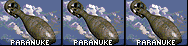
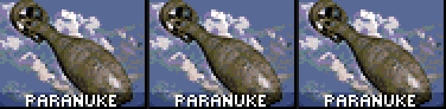
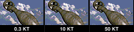
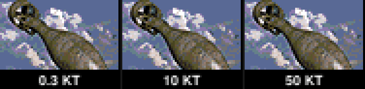
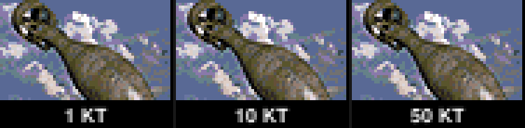
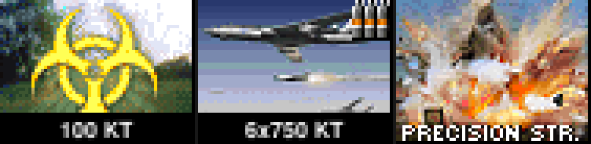
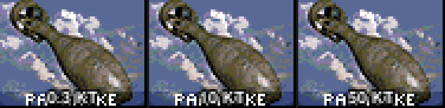
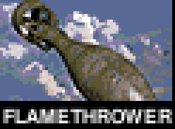
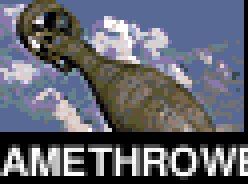

The caption is data, not pixels. Every image below is composed at the exact size the sidebar
draws it — a 62×46 slot, real cameo art decoded from bits/misc/icons, caption in
FreeSansBold at 7px with a 1px black contrast. Each block shows true size first, then the same
thing at 4× nearest-neighbour so the lettering can be inspected.
Six support powers draw the same paranuke sprite. The caption is baked into
the art, so all six read “PARANUKE” and nothing in the bin tells them apart:


The three American B61-12 yields, same sprite, saying three different things. The wording lives
in powers.yaml and changing it is a text edit, not a re-render.




This is the one thing worth a decision. The shipped art already has
“PARANUKE” baked into exactly the pixels the runtime caption wants, so drawing over it
without covering it first gives two overlapping words. CaptionBackgroundColor is off by
default and set to solid black in the sidebar; below is what it looks like unset:

On art rendered with convert.py --no-baked-captions there is nothing underneath, and
the band can be turned off so the caption sits straight on the picture.
A slot is 60px wide inside its margins. TinyBold, the font the sidebar's other overlay text uses, is too big — five of the sixteen shipped infantry captions overflow it. At 7px all sixteen fit, though “FLAMETHROWER” lands on exactly 60px with nothing to spare.
| caption | 7px | TinyBold (10px) |
|---|---|---|
| FLAMETHROWER | 60 | 85 |
| SPEC FORCES | 51 | 73 |
| TEAM LEADER | 51 | 72 |
| STINGER AA | 43 | 62 |
| TECHNICIAN | 43 | 61 |
| CONSCRIPT | 41 | 59 |
| GRENADIER | 42 | 60 |
| JAVELIN AT | 41 | 59 |
| DRONE OP | 37 | 54 |
| ENGINEER | 37 | 53 |
| RIFLEMAN | 36 | 51 |
| SNIPER | 27 | 38 |
| MORTAR | 30 | 43 |
| MEDIC | 23 | 32 |
| LMG | 15 | 22 |
| SPY | 15 | 21 |


Anything wider is shortened from the right rather than allowed to bleed into the neighbouring cameo, which sits one pixel away.
The glyphs are Pillow's rasterisation of the same TTF at the same pixel size, not
FreeType's; hinting at 7px may differ by a pixel here and there. The backdrop uses the chernobyl
map's temperat.pal because the real one lives inside temperat.mix —
that affects only the photograph, never the caption, which the widget draws in straight RGBA and
never routes through a palette. Both are reasons to confirm on screen, not reasons to distrust the
sizing: the widths above come from the same advance-sum the engine uses.